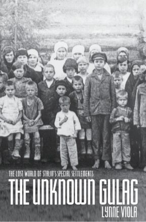

Ask Lynne Viola Questions about The Unknown Gulag
Monday, June 9th, 2008
In the inaugural Episode in Gulag History, Lynne Viola related the brutal and harrowing tales of the so-called “kulaks”–peasants grabbed up by the Soviet state in the early 1930s and exiled to horrific conditions in the geographic extremes of the Soviet Union.Did the conversation leave unanswered questions? Join us in the comments section to this post, where Lynne Viola will answer your questions about her research and her book. She will respond to your questions from June 10-June 20.
UPDATE: Lynne Viola has kindly agreed to postpone her visit here until the fall. Check back for a schedule of her visit to answer your questions along with future Episodes in Gulag History.